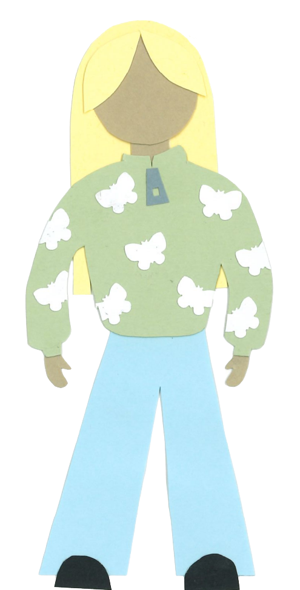

In einer Zombieapokalypse hätte Jessie gute Chancen, denn sie kann mit Schrotflinte und Kettensäge umgehen und ihre beiden Raubtiger Ximie und Cookie folgen ihr auf Schritt und Tritt. Eigentlich ist Jessie aber sehr friedliebend und verbringt ihre Zeit lieber damit, Bienen, Honig oder Hamster ausfindig zu machen. Im Harz hat Jessie schon ... Stempel gesammelt. Ihre längste Streak beträgt ... Stempel in Folge von ... bis .... Ihre längste negative Streak sind ... Stempel in Folge, beginnend bei ... und endend bei ....
Zur Startseite 